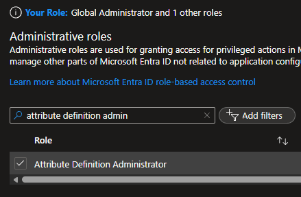
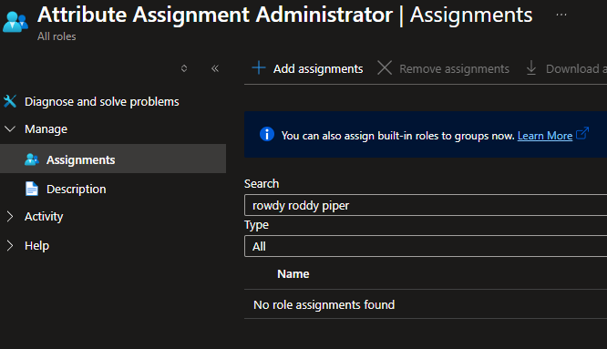
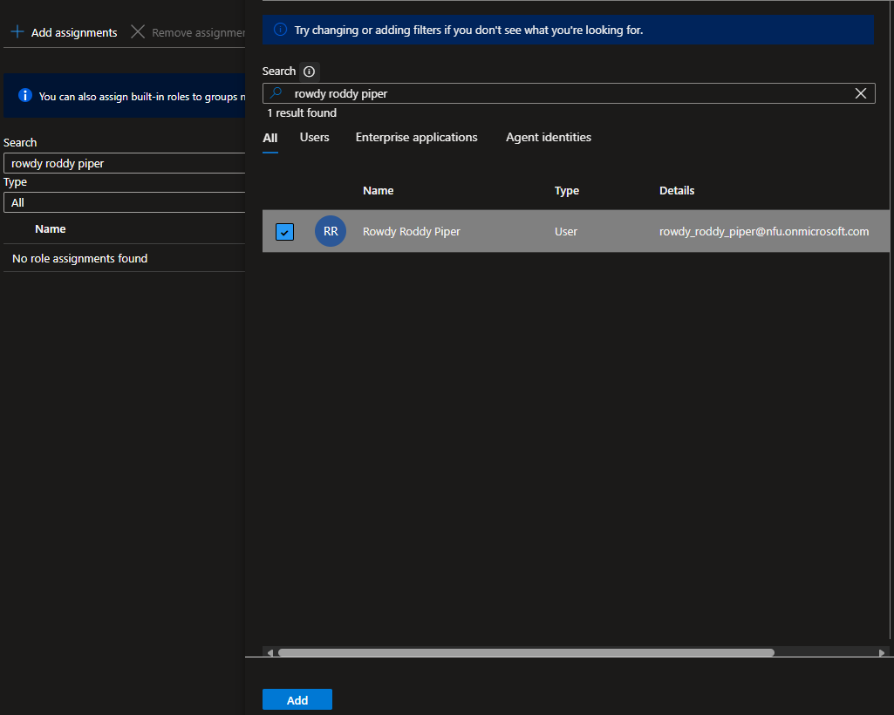
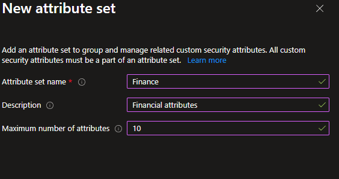
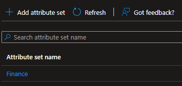
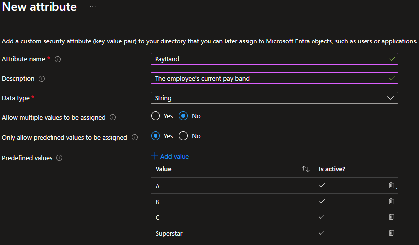
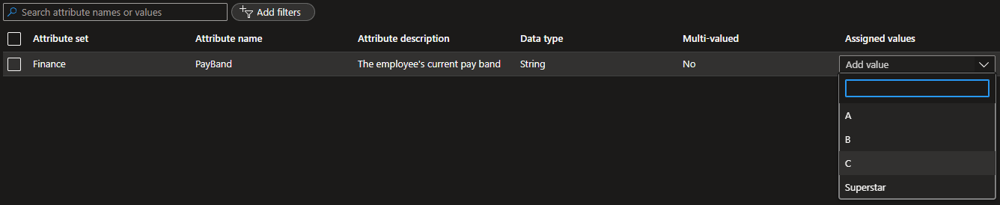

Introducing Custom Security Attributes in Entra
At the time of writing it's only 4 and a half weeks till Christmas, and all the children are asking Santa for the ability to save business attributes to their Entra Objects. You can tell them from me that letter to santa is wasted, because thanks to the magic of Custom Security Attributes you can not only assign that data to your Entra Objects already, you can also enforce fine grained control over access to Azure resources through Attribute Based Access Control (ABAC). A bona fide Christmas cracker!
So what are Custom Security Attributes anyway?
Custom Security Attributes are key-value pairs that can be assigned to Entra Objects such as users, groups, and applications.For example, if you want to record data such as an employee's hourly rate, you can create an attribute for that, assign it to the user, and apply a value.
A better use may be to record which project someone is working on. What if they are working on several projects at the same time?No problem, when creating your Custom Security Attributes, you have the option to allow single or multiple values to be assigned, unless you create it as a boolean, because then you won't know if you're coming or going.
Pre-Requisites
Before you get started, you will need the Attribute Definition Administrator or Attribute Assignment Administrator roles. These can be assigned through Entra -> Manage -> Roles and Administrators. There is a bit of a gotcha where you have to click the role name, and not the juicy tick box beside it begging for attention.

Get past that and you will be on the Attribute Definition Administrator or Attribute Assignment Administrator role screen where you can search for a user and assign the role.

Click Add assignments, search for the user again, then select and add them.

With the correct role assigned you will now have the power to get started, but there are a few housekeeping duties to carry out first.
Creating Attribute Sets
Before you can start creating and using Custom Security Attributes, you need to create an Attribute Set. This is a logical container for holding related Custom Security Attributes. You can create an Attribute set from from Entra -> Manage -> Custom Security Attributes.

Managing Attribute Sets
Following the creation of the 1st Attribute set, returning to Entra -> Manage -> Custom Security Attributes will show the attribute set in a list.

Click the finance attribute set (or whatever you want to create) to start adding attributes.
In this example I've created a pay band attribute which is defined as a string and only accepts the predefined values "A","B","C", and "Superstar".

Attributes can only be type boolean, integer, or string. If you want to store a more complex value, you will need to store them strings and convert them in your own scripts or tools,
Isn't this just the same as tags?
It's a fairly similar concept, however, Custom Security Attributes are meta-data assigned to Entra objects, while tags are meta-data assigned to Azure resources. Both can be queried programmatically which makes them useful for automation, reporting, and governance.
Assigning values to users
With the initial set up complete, we're finally ready to start assigning Custom Security Attributes to users. This is simply a case of selecting the user in Entra, clicking Custom Security Attributes on the left, Add Assignment, then selecting the attribute you want to assign and it's settings.

As you might expect, returning to the same area after assigning an Attribute will list all previously assigned attributes, with the option to update or remove them.
To be continued
In this post, I've introduced the idea of Custom Security Attributes, what you need before getting started, and how to set them up and assign them to users. In the next post I'll go through how to query Custom Security Attributes using Microsoft Graph and Powershell to make it easier to report and automate their use.